Optocoupler Construction
How optocouplers are physically built: die technologies for emitter and detector, co-planar vs stacked die arrangements, isolation barrier materials and their partial-discharge behavior, package families from 4-pin DIP to wide-body SO16, and a walk through the manufacturing and test flow.
All illustrations and animations on this page are schematic teaching drawings, not to scale. Numerical values are representative of common parts; always confirm against the current datasheet of the exact part number you buy.
Strip away the plastic and every optocoupler contains the same five functional elements: an emitter die (an infrared LED), a detector die (a silicon photo-sensitive device), two electrically separate lead frames that carry them, an optical path that lets light travel from one die to the other, and an insulation system that prevents anything but light from making the trip. The package around them provides mechanical protection, blocks ambient light, and sets the external creepage and clearance distances.
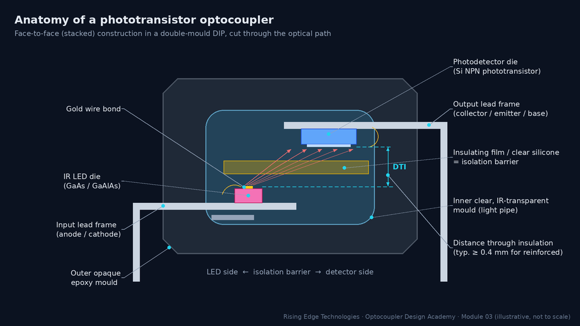
The barrier is a system, not a single layer
It is tempting to point at the thin film between the dies and call it “the isolation barrier”. In reality a certification body evaluates the whole insulation system: the film (if any), the clear silicone or epoxy that fills the optical path, the interfaces where those materials meet, the outer moulding compound, and the external surfaces between the pins. A perfect film is worthless if moisture can wick along a poorly bonded interface from one lead frame to the other. That is why component standards such as IEC 60747-5-5 test the finished part (hi-pot, partial discharge, insulation resistance) rather than the raw materials.
The emitter is almost always an infrared LED made from a III–V compound semiconductor. When forward current flows, electrons and holes recombine at the junction and give up their energy as photons. The photon energy, and therefore the wavelength, is set by the energy gap the carriers fall across:
- λ — emission wavelength (nm)
- h — Planck’s constant, c — speed of light
- E — photon energy (eV), close to the band-gap energy Eg of the emitting layer
Pure GaAs has Eg ≈ 1.42 eV at room temperature, so band-to-band emission is near 1240 / 1.42 ≈ 870 nm. The two LED families you will meet in optocoupler datasheets both descend from GaAs:
| Property | GaAs:Si (silicon-doped GaAs) | GaAlAs / AlGaAs (heterostructure) |
|---|---|---|
| Peak wavelength | ≈ 940 nm (Si dopant creates lower-energy states) | ≈ 850–880 nm (set by aluminium fraction) |
| Forward voltage VF | ≈ 1.2 V typ, 1.4 V max at 10–20 mA | ≈ 1.4–1.6 V typ, up to ≈ 1.8 V max |
| Optical efficiency | Good | Higher — carriers confined in a thin active layer |
| Speed | Slow (long carrier lifetime): suits µs-class parts | Fast: used where the detector is fast too |
| Typical use | General-purpose phototransistor parts (PC817, 4N35) | High-speed logic, gate-driver and linear parts (e.g. HCNR201, IL300) |
Representative values. The datasheet’s description line (“GaAs infrared LED”, “AlGaAs LED”) and its VF table tell you which technology a specific part uses.
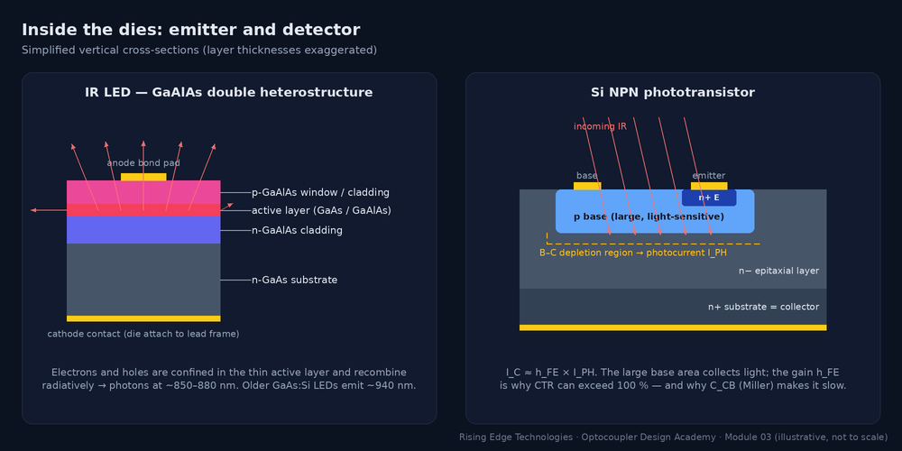
Why infrared and not visible light?
Silicon detectors respond best in the near-infrared, peaking at roughly 800–950 nm. GaAs-family LEDs are efficient emitters in exactly that band. Visible LEDs would work, but they would couple less of their power into a silicon detector and are less efficient emitters. The infrared choice also means the outer mould can be opaque black epoxy that blocks ambient visible light.
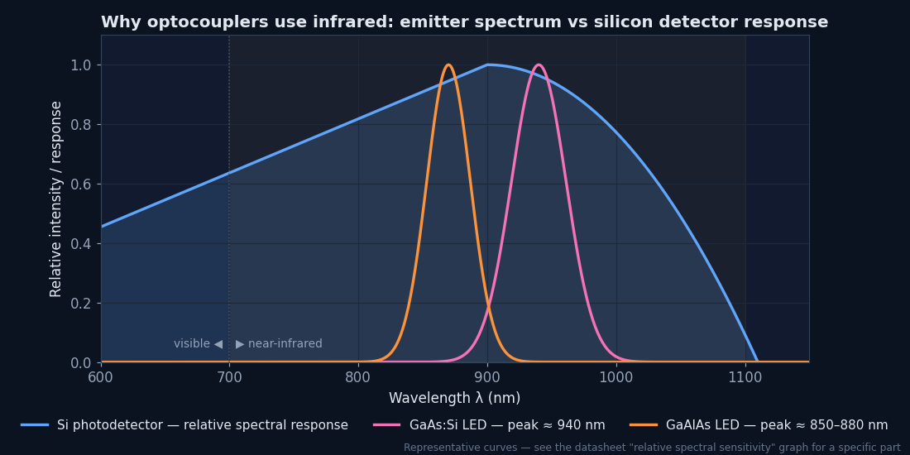
Forward voltage and temperature
The LED’s VF falls by roughly 1.5–2 mV/°C. For a resistor-driven LED this raises IF slightly when hot. That is harmless, but it matters when you calculate worst-case IF from a minimum supply with maximum VF at cold.
Worked example — LED drive for a PC817 from 5 V
Target IF = 10 mA. Datasheet: VF = 1.2 V typ, 1.4 V max (at IF = 20 mA).- Size the resistor for the minimum current case (max VF, min supply 4.75 V): R = (4.75 − 1.4) / 10 mA = 335 Ω → choose 330 Ω.
- Check the maximum current case (VF ≈ 1.0 V hot, 5.25 V supply): IF = (5.25 − 1.0) / 330 ≈ 12.9 mA. Well below the 50 mA absolute maximum.
- LED dissipation ≈ 12.9 mA × 1.2 V ≈ 15 mW, versus a typical 70 mW input power rating.
The emitter side of the optocoupler family is fairly uniform. The detector side is where the families diverge. Every detector starts with a silicon p–n junction that turns absorbed photons into a photocurrent IPH. What differs is what the die does with that tiny current (typically micro-amps): amplify it with a transistor, square it up with logic, stack it into a voltage that drives MOSFET gates, or use it to fire a thyristor.
| Detector die | What is on the die | Gain / sensitivity | Speed class | Examples |
|---|---|---|---|---|
| Phototransistor | NPN with a large light-sensitive base–collector junction. Base is bonded out on 6-pin parts. | CTR ≈ 20–600 % | tr, tf ≈ 2–20 µs (load dependent) | PC817, 4N35, TLP785 |
| Photodarlington | Phototransistor driving a second transistor on the same die | CTR ≥ 500 % (often > 1000 %) | Tens to hundreds of µs | 4N32, H11B1 |
| Photodiode + transistor | Separate photodiode feeding the base of an output transistor. This removes the Miller-multiplied CCB from the light-sensing node. | CTR ≈ 7–50 % | ≈ 1 Mbit/s | 6N135, 6N136 |
| Photodiode + logic IC | Photodiode, trans-impedance amplifier, comparator and logic output, often under a transparent Faraday shield | Specified as an LED threshold current (a few mA) | 10–50 Mbit/s class | 6N137, HCPL-2630, TLP2361 |
| Photovoltaic array + MOSFETs | A series stack of tiny photovoltaic cells charges the gates of a pair of output MOSFETs (solid-state relay) | Specified as LED turn-on current | ≈ 0.1–few ms switching | AQY210, TLP222 |
| Photo-TRIAC | Light-activated bidirectional thyristor, with optional zero-crossing inhibit circuit | LED trigger current IFT (5–15 mA) | Mains-cycle switching | MOC3021, MOC3041, MOC3063 |
| Gate-driver IC | Photodiode, amplifier and a push-pull output stage rated for amps of peak gate current. Newer parts add UVLO, DESAT and Miller clamp. | LED threshold current (a few mA) | Sub-µs propagation delay | HCPL-3120, TLP250, ACPL-332J |
Speed and gain columns are order-of-magnitude guides. Module 5 (Types) walks through each family with its own characteristic curves.
Why a phototransistor is slow: Miller capacitance
A phototransistor needs a large base–collector junction to catch light. A large junction means a large capacitance CCB. The collector swings by volts while the photocurrent charging that capacitance is only micro-amps, and the transistor’s gain multiplies the effective capacitance (the Miller effect). This construction choice is the root of the microsecond switching times. Splitting the die into a photodiode plus a separate transistor (6N135/6N136) keeps the light-sensing node at an almost constant voltage, and gains roughly an order of magnitude in speed at the cost of CTR.
Dark current: the detector’s leakage
With the LED off, a phototransistor still conducts a small collector–emitter leakage current ICEO (“dark current”). It is typically nanoamps at 25 °C (datasheet maxima of tens of nA are common), but like all silicon junction leakage it rises roughly exponentially with temperature (a common rule of thumb is a doubling every ≈ 10 °C). With a high-value pull-up resistor at 100 °C+, dark current can erode your logic-high margin. Check the ICEO vs TA curve.
Worked example — is dark current a problem?
A 4N35-class output pulls up to 5 V through RL = 100 kΩ. Assume ICEO = 50 nA at 25 °C and a doubling every 10 °C.- At 85 °C: 50 nA × 26 = 3.2 µA.
- Voltage drop in RL = 3.2 µA × 100 kΩ = 0.32 V → output high ≈ 4.68 V. Still a valid logic high.
- At 105 °C: 12.8 µA → 1.28 V drop → ≈ 3.7 V. Now marginal for 5 V CMOS (VIH = 3.5 V). Use RL ≤ 10 kΩ or the real curve from the datasheet.
Given two dies on two separate lead frames, the manufacturer has to decide how to point one at the other. Three arrangements dominate. Each is a different trade-off between how much light arrives (which sets CTR), how far apart the two conductors are (which sets isolation), and how much they “see” each other electrically (which sets input–output capacitance and common-mode immunity).
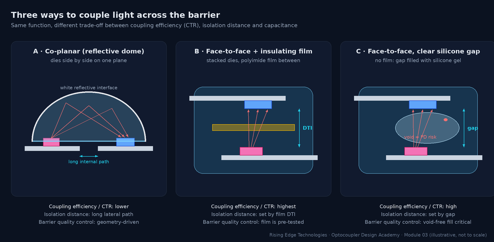
| Construction | How light gets across | Strengths | Weaknesses |
|---|---|---|---|
| Co-planar / reflective dome | Dies side by side on one plane; a clear dome with a white reflective outer surface bounces light onto the detector | Long internal isolation path, low CIO, very high isolation ratings possible | Lower coupling efficiency, so lower CTR or more IF needed for the same output |
| Face-to-face with insulating film | Dies stacked facing each other; a transparent polyimide film between | Highest coupling efficiency. The film is a pre-qualified, uniform barrier with a defined DTI. | Larger overlapping area, so higher CIO. The film–silicone interfaces must be void-free. |
| Face-to-face, silicone gap | Dies stacked facing each other; the gap is filled with clear silicone | High efficiency, simple, low cost | Isolation depends on gap control and void-free filling. Voids cause partial discharge (Section 5). |
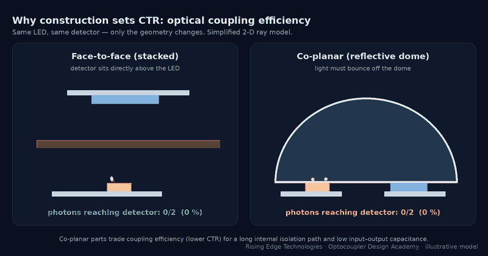
The hidden capacitor: CIO and common-mode transients
Two lead frames and two dies separated by an insulator form a small capacitor, the input–output capacitance CIO. It is typically well under a picofarad to about 1 pF, which sounds harmless until the voltage between the two grounds moves quickly. Every volt per second of common-mode slew pushes a displacement current through the barrier:
- iCM — displacement current injected across the barrier (A)
- CIO — input-to-output capacitance (F)
- dVCM/dt — slew rate of the voltage between the input and output grounds (V/s)
Worked example — 1 pF meets a fast switching node
CIO = 1 pF, and the output side sits on a half-bridge switch node slewing 10 kV/µs (1010 V/s).- iCM = 1 × 10−12 F × 1010 V/s = 10 mA.
- A phototransistor’s photocurrent is only micro-amps (e.g. IC = 2 mA at hFE ≈ 400 gives IPH ≈ 5 µA). Even a small fraction of 10 mA landing on the base node is a false “light” signal thousands of times larger than the real one.
- This is why high-CMTI parts use constructions that minimise and steer this current: a transparent conductive Faraday shield over the detector, tied to output ground, plus low-impedance photodiode front ends.
Four materials do most of the insulating inside an optocoupler. They must be transparent to near-infrared (where they sit in the optical path), bond reliably to each other and to metal, survive solder reflow, and hold off kilovolts for decades without eroding.
| Material | Role | Dielectric strength (representative) | Strengths | Watch-outs |
|---|---|---|---|---|
| Polyimide film | Thin transparent sheet between facing dies | ≈ 150–300 kV/mm (thin-film test values) | Very high strength, uniform thickness, stable to > 300 °C, pre-tested before assembly | Adhesion at film edges; moisture absorption; slight IR loss |
| Clear silicone | Optical gel or elastomer filling the light path | ≈ 15–25 kV/mm | Excellent IR transparency, stays compliant over temperature (low stress on wire bonds) | Voids and bubbles during dispensing; weaker bond to epoxy |
| Clear epoxy | Inner transparent mould (light pipe) in double-mould parts | ≈ 15–30 kV/mm | Rigid, precise geometry, good light guide | Higher stress on dies; yellowing and cracking at high temperature |
| Opaque mould compound | Outer body; defines external surfaces | ≈ 15–30 kV/mm | Blocks ambient light; mechanical strength; low moisture uptake | Its CTI sets the material group used for external creepage |
| For comparison: air | Clearance between pins | ≈ 3 kV/mm (mm-scale gaps, sea level) | Self-healing after a flashover | Falls with altitude; needs large distances |
Dielectric strength depends strongly on thickness, test method, temperature and humidity. Use these values only to build intuition; the component’s certified ratings (VIORM, VIOTM, VISO) are what you design to.
Breakdown strength is not the design limit — partial discharge is
If polyimide holds hundreds of kV/mm, why is a part with a 0.4 mm DTI only rated for ≈ 900 Vpeak continuous working voltage? Because insulation rarely fails by clean instantaneous breakdown in service. It fails by partial discharge (PD) and slow erosion. Any gas-filled void, crack or delaminated interface inside the solid sees a higher field than the surrounding material. For a thin disc-shaped void across the field, it is roughly εr times higher (εr ≈ 3–4 for epoxy or polyimide). And gas breaks down far more easily than solid. Each AC half-cycle above the PD inception voltage produces tiny discharges that carbonise and erode the void walls. Over months or years this grows “electrical trees” that eventually bridge the barrier.
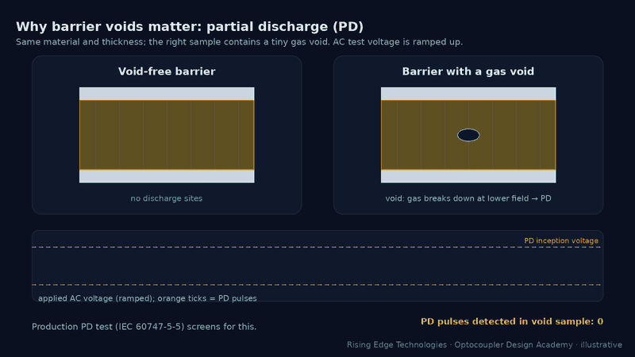
Worked example — field across a 0.4 mm barrier
A reinforced part has DTI = 0.4 mm, VIORM = 890 Vpeak and VIOTM = 6000 Vpeak (representative values for a wide-body optocoupler).- Continuous working stress: E = 890 V / 0.4 mm ≈ 2.2 kV/mm, about 1 % of polyimide’s short-term strength.
- Transient over-voltage: E = 6000 V / 0.4 mm = 15 kV/mm. This is still below bulk breakdown, but only for the specified short duration.
- The large apparent margin is deliberate. It keeps any residual void below PD inception over 20+ years, at temperature and humidity. That margin is what VIORM certifies.
Safety standards describe an isolation barrier with three independent distances. The package construction fixes all three for the component. Your PCB layout can only make the external ones worse, never better.
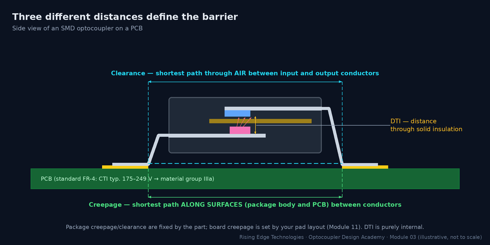
Clearance — protects against flashover
Shortest distance through air between conductors on the two sides. Sized for the peak transient (impulse) voltage from the overvoltage category, corrected for altitude above 2000 m.
Creepage — protects against tracking
Shortest distance along insulating surfaces. Sized for the rms working voltage, pollution degree and the material group (CTI) of the surface. Contamination plus moisture slowly forms carbon tracks.
DTI — protects against solid breakdown
Shortest distance through solid insulation inside the package. Many end-product standards require ≥ 0.4 mm for supplementary or reinforced solid insulation. Thin-sheet film constructions may instead qualify by layer-count and type testing.
Material group: why the mould compound’s CTI matters
Required creepage depends on how easily the insulating surface tracks, measured as the Comparative Tracking Index (IEC 60112) and grouped as follows:
| Material group | CTI range | Typical where you meet it |
|---|---|---|
| I | CTI ≥ 600 | Special high-CTI mould compounds and laminates |
| II | 400 ≤ CTI < 600 | Better mould compounds; high-CTI FR-4 grades |
| IIIa | 175 ≤ CTI < 400 | Many optocoupler bodies; standard FR-4 |
| IIIb | 100 ≤ CTI < 175 | Lowest-grade materials |
The optocoupler datasheet states its body’s CTI or material group in the “insulation characteristics” table. Use the lower of the package and PCB groups for a creepage path that runs across both surfaces.
Worked example — does the package spacing meet a 230 V reinforced requirement?
Product: 230 VAC mains, working voltage 250 Vrms, overvoltage category II, pollution degree 2, material group IIIa, reinforced insulation needed. Values from the IEC 60664-1 tables (confirm against the edition and end-product standard you certify to):- Creepage, basic, 250 V, PD2, group III → 2.5 mm. Reinforced = 2 × basic = 5.0 mm.
- Rated impulse for OVC II at 230 V = 2.5 kV → basic clearance 1.5 mm. Reinforced uses the next impulse step (4 kV) → 3.0 mm.
- Standard 7.62 mm DIP (≈ 7 mm external): passes with margin. SOP-4 (≈ 5 mm): meets it exactly, with no margin for board-level losses. Narrow SO-8 (≈ 4 mm): fails.
- Same product in an industrial cabinet (pollution degree 3): basic creepage becomes 4.0 mm, reinforced 8.0 mm. Only the wide-lead DIP, stretched SO or wide-body SO-16 packages now qualify.
The same die pair is often sold in several packages. The package decides the external creepage and clearance, the maximum certifiable working voltage, the assembly process, and the board area. Figure 6 lines up the common families at the same scale.
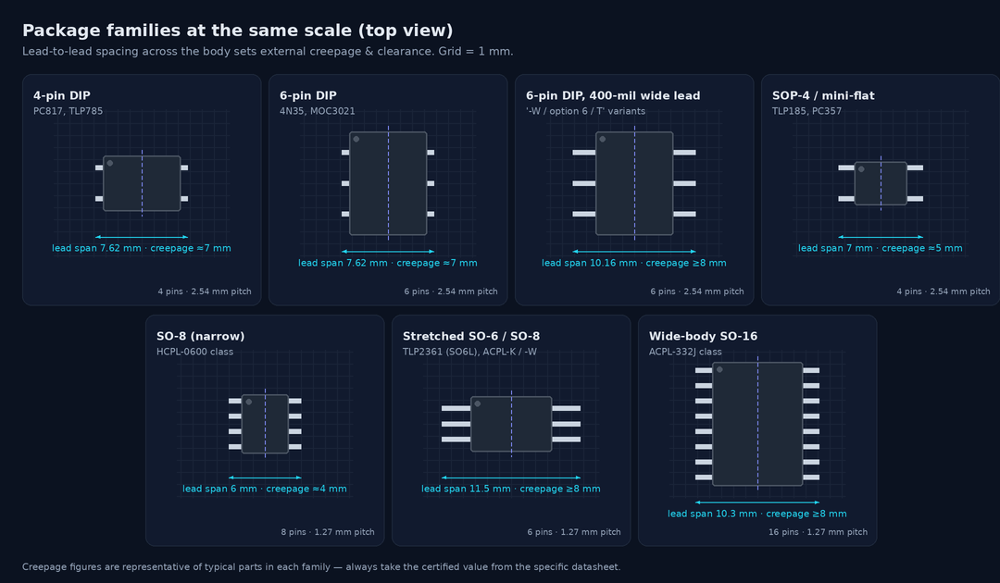
| Package | Mount | Creepage / clearance (typ.) | Typical DTI | Typical VIORM range | Board area (approx.) | Notes |
|---|
Representative values across several vendors. The same package outline can be certified to different values by different manufacturers. Always copy the certified figures from the exact part’s datasheet into your safety file.
Beyond spacing: the other package decisions
DIP vs SMD versions of the same part
Many DIP parts come with gull-wing leads for reflow (often an “S” or “SMD” ordering option) and a 400-mil wide-lead option (“W”, “T”, option 6 — vendor specific). Isolation ratings can differ between options.
Channels per package
Dual and quad packages save area. However, adjacent channels inside one body are not isolated from each other to the same level (or at all) unless the datasheet states it.
Thermal and power
Smaller packages have higher RθJA and lower total power ratings. Gate-driver parts pushing amps of peak current need the wider bodies partly for heat, not only for spacing.
Pin-compatible is not certificate-compatible
A second-source part in the same outline may have a different CTI, DTI or VIORM. Re-check the insulation table before approving an alternate.
The lead frame is the stamped or etched metal skeleton that carries the dies and becomes the pins. Its material and finish matter to you because they set solderability, whisker risk and how the package survives your reflow profile.
| Aspect | Common choices | Why it matters to the board designer |
|---|---|---|
| Lead-frame alloy | Copper alloys; iron–nickel (Alloy 42) in some packages | Copper conducts heat better; Fe–Ni matches silicon expansion but is less solderable and magnetic |
| Lead finish | Matte tin; NiPdAu pre-plated frames | Solderability and shelf life; tin whisker mitigation in long-life products |
| Die attach | Conductive (silver-filled) epoxy | Thermal path from the dies to the pins |
| Wire bond | Gold (or copper) wire, ≈ 25–30 µm | Wires sit in the compliant silicone; harsh thermal cycling can fatigue them |
| Moisture sensitivity | MSL rating per J-STD-020 (SMD parts) | Absorbed moisture flashes to steam in reflow and can delaminate internal interfaces. Delamination can open an internal creepage path. |
LED and detector wafers are fabricated separately. Often they come from different fabs and different materials systems. They meet for the first time in back-end assembly. Watch the sequence below, then read how each step shows up in the datasheet.
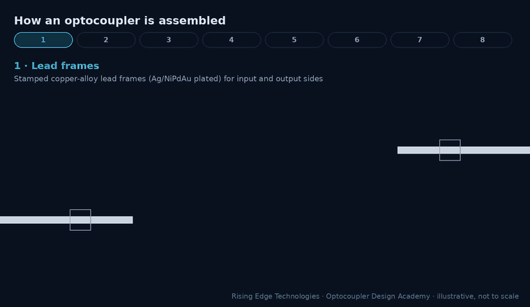
| Step | What happens | What it controls |
|---|---|---|
| 1. Wafer fab & dicing | LED (III–V) and detector (Si) wafers probed, sawn into dies | Emitter efficiency, detector gain → CTR spread |
| 2. Die attach | Dies bonded to their lead-frame pads | Thermal path, die position (optical alignment) |
| 3. Wire bond | Die pads connected to lead fingers | Reliability under thermal cycling |
| 4. Barrier / optical path | Film placed or silicone dispensed; frames brought into position | DTI, voids, coupling efficiency |
| 5. Moulding | Inner clear and outer opaque transfer moulding | Light pipe, ambient-light rejection, external creepage |
| 6. Trim, form, plate | Tie bars removed, leads formed (DIP or gull-wing) | Lead span, which sets external creepage and clearance |
| 7. Isolation test | 100 % hi-pot and (for VDE/IEC-certified parts) PD test | Screens barrier defects |
| 8. Electrical test & rank | VF, leakage, VCE(sat), CTR measured; parts sorted | CTR rank bins, datasheet limits |
Two different production isolation tests
UL 1577 withstand (hi-pot)
The rating VISO (e.g. 5000 Vrms) is a 1-minute type-test value. In production each part is typically stressed at ≈ 1.2 × VISO for 1 s. Passing proves the barrier withstands a short over-voltage today. It says nothing about decades at the working voltage.
IEC 60747-5-5 partial discharge
For parts certified with a working voltage VIORM, every unit is tested at VPR = 1.875 × VIORM for 1 s (method b) with a PD limit of < 5 pC. Sample and type tests use a longer duration at a lower factor (method a, 1.6 × VIORM). This is the test that screens the voids from Section 5.
Factors as commonly printed in optocoupler datasheets’ insulation tables. The governing values are in the standard edition cited on the part’s certificate.
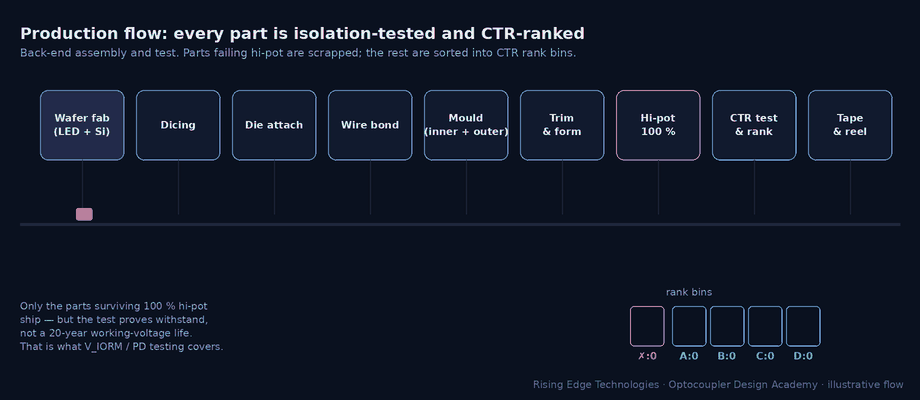
CTR binning: what the rank letter buys you
Coupling efficiency, LED efficiency and detector gain all vary from lot to lot, so raw CTR spreads over nearly an order of magnitude. Rather than scrap that spread, manufacturers measure every part and sell it in guaranteed rank windows.
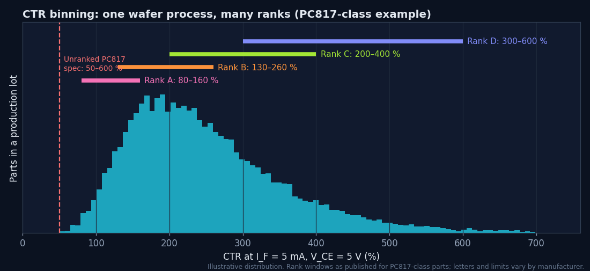
Worked example — what does ordering a rank save?
Requirement: guarantee IC ≥ 1 mA at end of life. Budget ×0.5 for LED ageing and ×0.8 for temperature (Module 9 refines these).- Unranked PC817 (CTRmin = 50 %): IF = 1 mA / (0.5 × 0.5 × 0.8) = 5.0 mA.
- Rank B (CTRmin = 130 %): IF = 1 mA / (1.3 × 0.5 × 0.8) ≈ 1.9 mA, a 62 % cut in LED current. Lower IF also slows LED ageing.
- The saving is only real if the ordering code in your BOM locks the rank. A generic “PC817” line lets purchasing buy any rank.
Manufacturers rarely publish cross-sections, but the construction leaves fingerprints all over the datasheet. You can infer most of this module’s content from five places:
| Datasheet location | What it reveals about construction |
|---|---|
| Description line / block diagram | LED material (GaAs, AlGaAs), detector type, Faraday shield (“internal shield”) |
| Insulation characteristics table | External creepage and clearance, DTI, CTI and material group, VIORM, VIOTM, VPR test factors |
| Electrical table: CIO, RIO | Face-to-face vs co-planar (CIO), barrier quality (RIO ≈ 1011 Ω or more) |
| CMTI / CMR specification | Shielding and detector front-end design |
| Ordering information & package drawing | CTR ranks, lead-form options, wide-lead variants, MSL and soldering limits |
Questions to ask a vendor for a safety-critical barrier
1. Construction
Co-planar or face-to-face? Film, silicone, or both?
2. DTI and material
Minimum DTI and the insulation material specification.
3. PD testing
Is 100 % production PD testing done (method b)? Limit in pC?
4. Certificates
UL 1577 file number and VDE/IEC 60747-5-5 certificate, with the ordering options they cover.
5. Ageing data
CTR-degradation curves vs IF and temperature (needed in Module 9).
6. Change control
Will you be notified (PCN) of assembly-site, material or construction changes?
Common construction-related field failures
Gradual CTR loss
LED light-output degradation, accelerated by high IF and temperature. Module 12.
Barrier breakdown after years
PD erosion from voids or delamination, often after reflow damage or repeated hi-pot testing.
Intermittent output glitches
Common-mode displacement current through CIO in unshielded parts near fast switch nodes.
Surface tracking between pins
External creepage too small for the real pollution degree; contamination and condensation.
Five elements
Emitter die, detector die, two separate lead frames, an optical path, and an insulation system.
Infrared by design
GaAs (≈ 940 nm) and GaAlAs (≈ 850–880 nm) LEDs match silicon’s peak response.
Detector sets the family
Phototransistor, Darlington, photodiode + logic, PV array, photo-TRIAC, gate driver: same LED, different die.
Construction is a trade-off
Face-to-face gives high CTR; co-planar gives a long internal path and low CIO.
CIO × dV/dt
1 pF at 10 kV/µs is 10 mA of displacement current. Shielding, not isolation voltage, fixes CMTI.
PD, not breakdown
Working-voltage ratings exist to keep voids below partial-discharge inception for decades.
Three distances
Clearance (air), creepage (surface) and DTI (solid) protect against different failures.
Package sets external spacing
Lead span, not pin count, determines creepage; ≥ 8 mm needs wide-lead or stretched packages.
Lock the rank
CTR ranks are measured after assembly; your BOM must name the rank to get its guarantee.
Construction & package design checklist
Tick items as you review a design. Your ticks are saved in this browser only. Use your browser’s print function for a sign-off copy.
Four parts: multiple choice, true/false, a matching exercise and three engineering scenarios. Score 80 % on the multiple choice to pass the module.